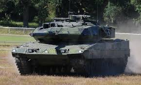

The Strv 122 is a Swedish main battle tank that, like the German Leopard 2A5, is based on the German Leopard 2 improved variant utilizing such newer technology as command, control, and fire-control systems, reinforced armour, and long-term combat capacity. Externally, the vehicle is distinguished from the Leopard 2A5 by the French GALIX smoke dispensers, different storage bins, and the thicker crew hatches.
Type: Main battle tank
Place of Origin: Sweden / Germany
Manufacturer: Krauss-Maffei Wegmann and Land Systems Hägglunds AB
Unit Cost: US$ 5.74 million (FY 1994) (~$11.9 million FY 2023)
Mass: 62.5 tonnes
Length: 9.97 m (gun forward)
Width: 3.75 m
Height: 3.0 m
Crew: 4
Main Armament: 1 x 120 mm Rheinmetall L44 smoothbore tank gun
Secondary Armament: 2 x 7.62×51mm NATO Ksp m/94 machine gun
Engine: MTU MB 873 Ka-501 liquid-cooled V-12 Twin-turbo diesel engine
Operational Range: 550 km (internal fuel)
Maximum Speed: 68 km/h (42.3 mp/h)
Gradient: Up to 60%
Trench Crossing: 3 meters (9.84252 feet)
Fording Depth: 1.2 meters (3.94 feet) without preparation, 2.25 meters (7.38 feet) with preparation
1991: Strv Ny Project
After the strv 2000 project for a new Swedish main battle tank (for service after the year 2000) was dismissed, the Swedish government decided in 1991 that a foreign main battle tank was to be procured to replace the strv 101, 102, 103 and 104 in service at the time. During the project "Strv Ny", three tank models were sent to Sweden to participate in trials: the American M1A2 Abrams, the German Leopard 2 Improved, and a prototype variant of the French Leclerc.
1994: Strv 122 Production
In 1994 the Swedish government decided to acquire 120 new production tanks and 160 older Leopard 2A4s as a stopgap before the newer tanks were finished. The Leopard 2A4 in Swedish service became designated strv 121 while the new production became the strv 122. Of the 120 strv 122, 29 were manufactured by Krauss-Maffei Wegmann while the other 91 were manufactured by Bofors and Hägglunds.
1996: Strv 122 Enters Service
The Strv 122 was first delivered to the Swedish Army in 1996. Since then a number of upgraded versions have been proposed or accepted into service, such as the Strv 122B and Strv 122B+.
2023: Strv 122 in Ukraine
On 24 February 2023, on the anniversary of the Russian full-scale invasion of Ukraine, the political decision was made, which meant that Sweden were to donate some ten tanks to Ukraine. The tanks are manned by soldiers that were trained in Sweden, by the Swedish army. On 24 September 2023, during the Zaporizhzhia counteroffensive in the Russian invasion of Ukraine, two Ukrainian Stridsvagn 122 tanks were lost in combat. However, one of them was recovered shortly after, repaired, and later inspected by Ukrainian President Volodymyr Zelenskyy.
The Strv 122 has been in service since 1997 and is used by the Swedish Army and the Ukrainian Army. It has been named the best armoured tank in the world - by experts and by those that use it alike. Now, ten Swedish armoured tanks (stridsvagn 122) are on the battlefield in Ukraine. Manned by Ukrainian crews, trained in Sweden. On 24 September 2023, during the Zaporizhzhia counteroffensive in the Russian invasion of Ukraine, two Ukrainian Stridsvagn 122 tanks were lost in combat. However, one of them was recovered shortly after, repaired, and later inspected by Ukrainian President Volodymyr Zelenskyy.